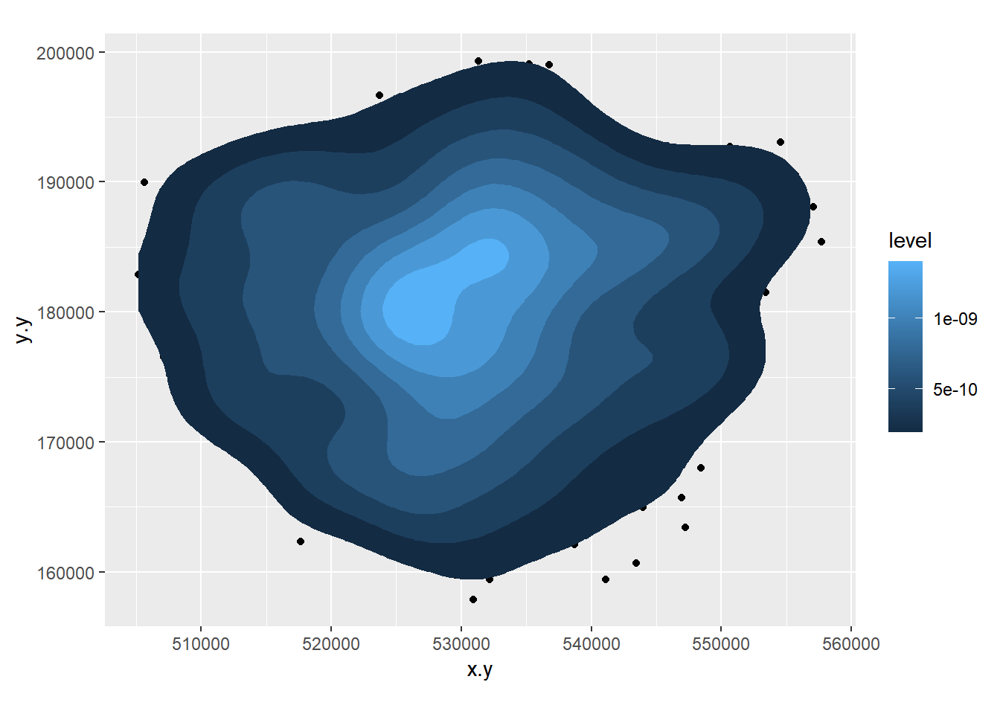
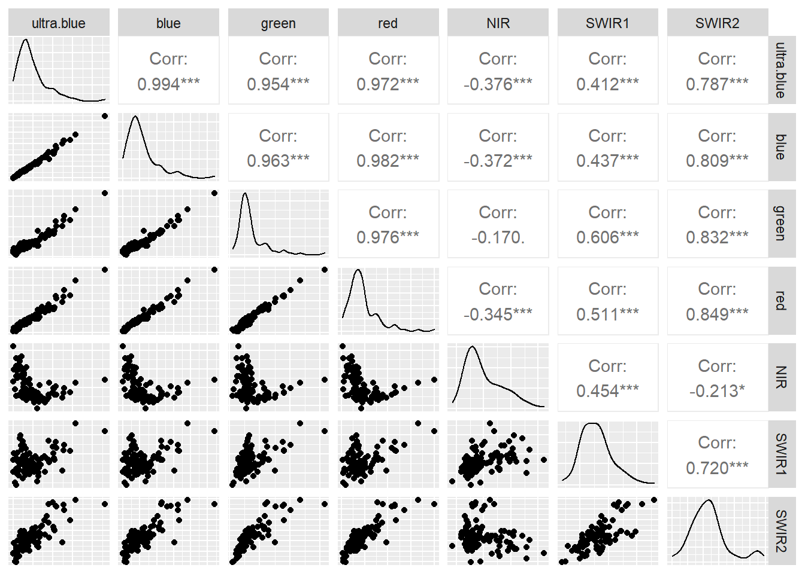
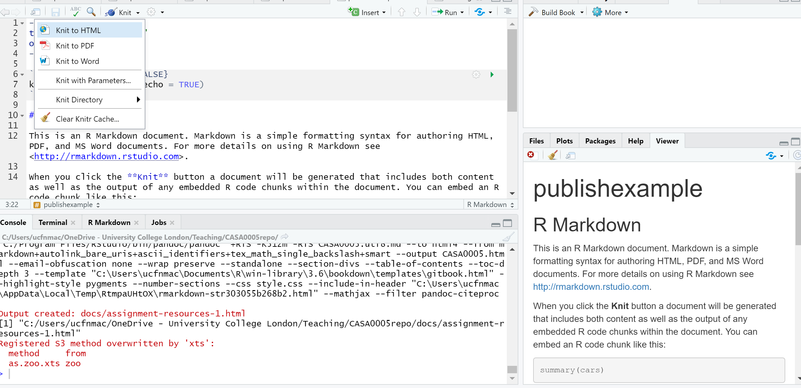
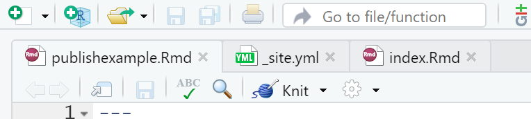
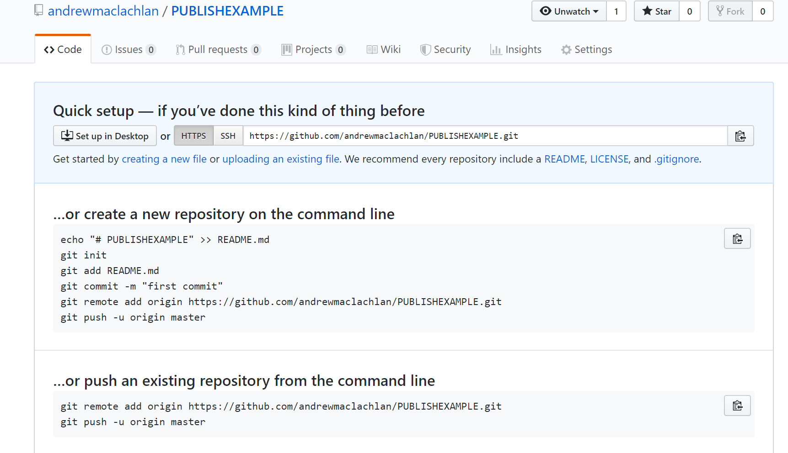
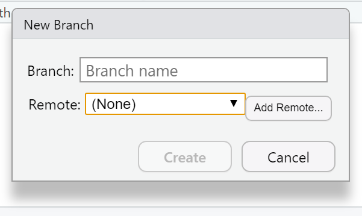
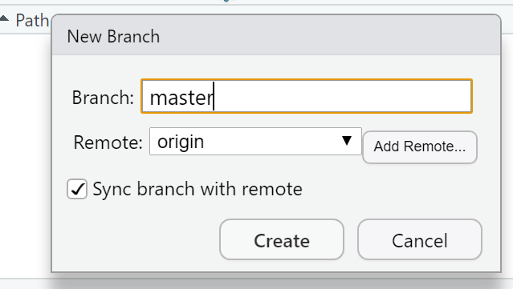
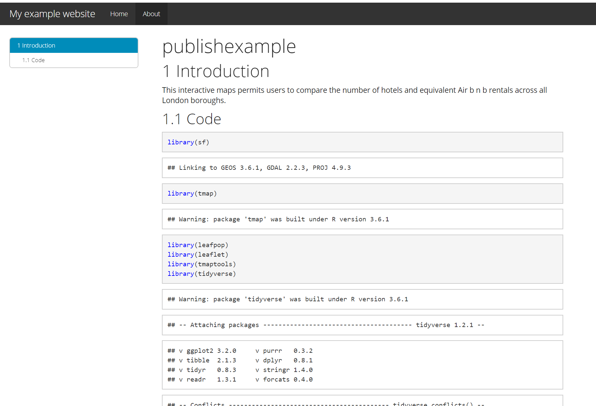

Chapter 8 Online mapping / descriptive statistics
This practical is formed of two parts, you can pick one you are more intersted in or complete both.
Part A looks at some more spatial descriptive statistics
Part B focuses on online mapping
8.1 Homework
Outside of our schedulded sessions you should be doing around 12 hours of extra study per week. Feel free to follow your own GIS interests, but good places to start include the following:
Assignment
From weeks 6-9, learn and practice analysis from the course and identify appropriate techniques (from wider research) that might be applicable/relevant to your data. Conduct an extensive methodological review – this could include analysis from within academic literature and/or government departments (or any reputable source).
Reading
For k-means clustering and exploratory data analysis read Chapter 12 “K-Means Clustering” from Exploratory Data Analysis with R by Peng (2016).
For interative maps re-read Chapter 8: “Making maps with R” Geocomputation with R by Lovelace, Nowosad and Muenchow (2020), especially setion 8.4.
Remember this is just a starting point, explore the reading list, practical and lecture for more ideas.
8.2 Recommended listening 🎧
Some of these practicals are long, take regular breaks and have a listen to some of our fav tunes each week.
Adam Bit different from me this week - I’m not all about drum and bass (although I mostly am). Stumbled across these recently and I should have known about them for much longer. The Joy Formidable - this is a 10th Anniversary revisit of their first EP and is ace. If you like Welsh, you’re in for a treat!
8.3 Part A spatial descriptive statistics
8.3.1 Learning objectives
By the end of this practical you should be able to:
- Create descriptive plots (histograms and boxplots) to help understand the frequency distributions of your data
- Write custom functions to process your data
- Produce a location quotient map to highlight interesting (above and below average) patterns in your data
- Write a function in R to produce a range of different maps based on user inputs
- Perform a very basic cluster analysis and output the results of a basic geodemographic classification
8.3.2 Getting Started
Before we begin this week’s practical, we need to load our packages and carry out some data preparation…
library(highcharter)
library(tidyverse)
library(downloader)
library(rgdal)
library(sf)
library(ggplot2)
library(reshape2)
library(plotly)
library(raster)
library(downloader)
library(rgdal)There is a problem with our London Wards data — we are missing some data relating to housing tenure. The housing tenure data in this file comes from the 2011 Census and visiting http://www.nomisweb.co.uk/ and interrogating Table KS402EW (the Tenure table), we can discover that data for the percentage of shared owners and those living in accommodation rent free are missing.
Rather than making you go off to Nomisweb and fetch this data, because I’m really nice, I’ve posted on GitHub a file containing this and extra categorical, ratio and geographical data that we will need to add to our existing London data file. To download this consult How to download data and files from GitHub, i’d used Option 1 and it’s the prac8_data folder you want to download.
We can easily join this new data to our original data in R.
LondonWards <- st_read(here::here("prac8_data",
"New_ward_data",
"NewLondonWard.shp"))## Reading layer `NewLondonWard' from data source `C:\Users\Andy\OneDrive - University College London\Teaching\CASA0005\2020_2021\CASA0005repo\prac8_data\New_ward_data\NewLondonWard.shp' using driver `ESRI Shapefile'
## Simple feature collection with 625 features and 76 fields
## geometry type: MULTIPOLYGON
## dimension: XY
## bbox: xmin: 503575 ymin: 155850.8 xmax: 561956.7 ymax: 200933.6
## projected CRS: OSGB 1936 / British National Gridextradata <- read_csv(here::here("prac8_data", "LondonAdditionalDataFixed.csv"))## Parsed with column specification:
## cols(
## WardName = col_character(),
## WardCode = col_character(),
## Wardcode = col_character(),
## PctSharedOwnership2011 = col_double(),
## PctRentFree2011 = col_double(),
## Candidate = col_character(),
## InnerOuter = col_character(),
## x = col_double(),
## y = col_double(),
## AvgGCSE2011 = col_double(),
## UnauthAbsenceSchools11 = col_double()
## )LondonWardsleftjoin <- LondonWards %>%
left_join(.,extradata,
by = c("WD11CD" = "Wardcode"))
#LondonWardsSF <- merge(LondonWards, extradata, by.x = "WD11CD", by.y = "Wardcode")8.3.3 Main Tasks
8.3.4 Task 1 - Descriptive Statistics
Using the lecture notes for guidance, you should generate the following graphs and descriptive statistics using standard functions and ggplot2 in R. Each element should be copied and saved to a word document or something similar:
Generate the following from your LondonWardsSF data frame:
- A simple histogram for a scale/ratio variable of your choice
- A simple histogram for a scale/ratio variable of your with a different frequency bin-width
- The same histogram with vertical lines for the mean, median and mode (the mode will be the mid value for the bin with the largest count) and the inter-quartile range. hint – use summary(table$variable) to find the values if you are not sure
- The same histogram with three different kernel density smoothed frequency gradients
- A boxplot of the same variable
- A faceted grid of histograms with for every variable in your London Wards data file. In order to do this, you will need to remove Factor (non-numeric) variables from your dataset and re-shape your data using the
melt()function in thereshape2package (hint – check the help file formelt.data.frame()to understand what the code below is doing). The code below will help you:
#check which variables are numeric first
Datatypelist <- LondonWardsleftjoin %>%
st_drop_geometry()%>%
summarise_all(class) %>%
pivot_longer(everything(),
names_to="All_variables",
values_to="Variable_class")
#make groups based on types of variables
Groups <- LondonWardsleftjoin %>%
st_drop_geometry()%>%
dplyr::select(is.numeric)%>%
pivot_longer(everything(),
names_to="All_variables",
values_to="val")%>%
mutate(All_variables = tolower(All_variables))%>%
mutate(group = case_when(str_detect(All_variables, "age") ~ "Age",
str_detect(All_variables, "employ|income|job|jsa") ~ "Employment",
str_detect(All_variables,
"house|rent|detatched|flat|terrace|owned|social|private|share|tax|mortgage") ~ "Housing", TRUE~"Other"))
Agehist <- Groups%>%
filter(group=="Age")%>%
ggplot(., aes(x=val)) +
geom_histogram(aes(x = val, y = ..density..))+
geom_density(colour="red", size=1, adjust=1)+
facet_wrap(~All_variables, scales = 'free')To change which group we are plotting, simply alter the filter() argument.
Make a note of which variables appear normally distributed and which appear to be skewed. What do the histograms for nominal and ordinal data look like?
Try performing a log10() transformation on the x variables and plotting a similar facet grid of histograms –– what does this do to some of the skewed variables? For example…
Agehist <- Groups%>%
filter(group=="Age")%>%
ggplot(., aes(x=log10(val))) +
geom_histogram(aes(x = val, y = ..density..))+
geom_density(colour="red", size=1, adjust=1)+
facet_wrap(~All_variables, scales = 'free')- Create a 2D histogram and 2D kernel density estimate of ward centroids in London using the Eastings and Northings data in the x and y columns of your dataset. For example:
Londonpoint <- ggplot(LondonWardsleftjoin, aes(x=x.y,y=y.y))+geom_point()+coord_equal()
Londonpoint
Londonpoint<-ggplot(LondonWardsleftjoin, aes(x=x.y,y=y.y))+stat_bin2d(bins=10)
Londonpoint
Londonpoint<-ggplot(LondonWardsleftjoin, aes(x=x.y,y=y.y))+geom_point()+coord_equal()
Londonpoint
Londonpoint+stat_density2d(aes(fill = ..level..), geom="polygon")
8.3.5 Extension 1
If you really want to go down the road of carrying out KDE in a range of different ways, then this Kernel Density Estimation tutorial — perhaps try it with some of the Blue Plaques data from previous weeks.
8.3.6 Task 2 - Function to recode data
In the lecture, it was mentioned that sometimes we should recode variables to reduce the amount of information contained in order that different tests can be carried out on the data. Here we will recode some of our scale/ratio data into some nominal/weak-ordinal data to carry out some basic analysis on.
A function to recode data in our dataset might look like the one below:
newvar<-0
recode<-function(variable,high,medium,low){
newvar[variable<=high]<-"High"
newvar[variable<=medium]<-"Medium"
newvar[variable<=low]<-"Low"
return(newvar)
}8.3.7 What’s going on in this function?
First we initialise a new variable called
newvarand set it to = 0. We then define a new function calledrecode. This takes in 4 pieces of information: A variable (calledvariablebut I could have called it anything) and three values calledhigh,mediumandlow. It outputs a value to the new string variablenewvarbased on the values of high, medium and low that are given to the function.To create the function in R, highlight the all of the code in the function and then run the whole block (ctrl-Return in R-Studio). You will see that the function is stored in the workspace.
We can now use this function to recode any of our continuous variables into high, medium and low values based on the values we enter into the function.
We are going to recode the Average GCSE Score variable into High, Medium and Low values – High will be anything above the 3rd Quartile, Low will be anything below the 1st Quartile and Medium – anything in between.
Note, if your data doesn’t have the 2013 GCSE scores but 2014, it will have different figures to these figures below and you will need to call the column by the column header you have
attach(LondonWards)
#Check the name of your column, there could be a slight error and it might be called 'AvgGCSED201'
summary(AvgGCSE201) ## Min. 1st Qu. Median Mean 3rd Qu. Max.
## 245.0 332.3 343.7 345.8 358.3 409.1Create a new column in your data frame and fill it with recoded data for the Average GCSE Score in 2013. To do this, pass the AvgGCSE2013 variable to the recode() function, along with and the three values for high, medium and low. You should create a new variable called gcse_recode and use the function to fill it with values
If you wanted to be really fancy, you could try altering the function to calculate these “High,” “Medium” and “Low”
LondonWards$GCSE_recode <- recode(AvgGCSE201,409.1,358.3,332.3)
#or
LondonWards$GCSE_recode <- recode(AvgGCSE201,409.1,358.3,332.3)You should also create a second re-coded variable from the unauthorised absence variable using the same function – call this variable unauth_recode and again, used the 3rd and 1st quartiles to define your high, medium and low values.
On to another function. This time, we will calculate some location quotients for housing tenure in London. If you remember, a location quotient is simply the ratio of a local distribution to the ratio of a global distribution. In our case, our global distribution will be London.
#Location Quotient function 1
LQ1<-function(pctVariable){
pctVariable /mean(pctVariable)
}
#Location Quotient function 2
LQ2<-function(variable,rowtotal){
localprop<-variable/rowtotal
globalprop<-sum(variable)/sum(rowtotal)
return(localprop/globalprop)
}The two functions above calculate the same Location Quotient, but the first one works on variables which have already been converted into row percentages, the second will work on raw variables where an additional column for the row totals is stored in a separate column – e.g. “age 0-15,” “age 16-64” and “age 65 plus” all sum to the “Pop2013” column in our data London Wards data set:
head(LondonWards[,1:7])## Simple feature collection with 6 features and 7 fields
## geometry type: MULTIPOLYGON
## dimension: XY
## bbox: xmin: 507996.8 ymin: 170317.9 xmax: 533838 ymax: 182206.1
## projected CRS: OSGB 1936 / British National Grid
## WD11CD WD11CDO WD11NM WD11NMW WardName WardCode
## 1 E09000001 00AA City of London <NA> City of London 00AA
## 2 E05000352 00ATGE Feltham West <NA> Hounslow - Feltham West 00ATGE
## 3 E05000353 00ATGF Hanworth <NA> Hounslow - Hanworth 00ATGF
## 4 E05000354 00ATGG Hanworth Park <NA> Hounslow - Hanworth Park 00ATGG
## 5 E05000355 00ATGH Heston Central <NA> Hounslow - Heston Central 00ATGH
## 6 E05000356 00ATGJ Heston East <NA> Hounslow - Heston East 00ATGJ
## Wardcode1 geometry
## 1 <NA> MULTIPOLYGON (((532134.9 18...
## 2 E05000352 MULTIPOLYGON (((509740 1736...
## 3 E05000353 MULTIPOLYGON (((513585.1 17...
## 4 E05000354 MULTIPOLYGON (((512142.6 17...
## 5 E05000355 MULTIPOLYGON (((513098.5 17...
## 6 E05000356 MULTIPOLYGON (((513467.2 17...Calculate Location Quotients for the 5 Housing tenure variables (Owner Occupied, Private Rent, Social Rent, Shared Ownership, Rent Free) in your data set using either of the functions above. Save these as 5 new variables in your dataset. *Hint – use the function to create the variable directly, for example:
#this is pseudo code, but you should see how this works
dataframe$newLQVariable <- LQ1(originalPercentageVariable)
#or
dataframe$newLQVariable <- LQ2(originalVariable,rowTotalVariable)8.3.8 Task 3 – Mapping Location Quotients
You should now try and create a map or series of maps of your housing tenure location quotients using tmap or ggplot. Try to create a map by referring back earlier practicals in this course and follow the steps from there (or, indeed, use your memory)
8.3.9 Task 4 – Creating a Basic Geodemographic Classification
As we saw in the lecture, geodemographic classifications are widely used to classify areas according to the characteristics of the population that inhabits them. All geodemographic classifications are created using cluster analysis algorithms. Many of these algorithms exist, but one of the most commonly used is k-means.

One of the pitfalls of these algorithms is that they will always find a solution, whether the variables have been selected appropriately or standardised correctly. This means that it’s very easy to create a classification which is misleading.
All of that said, it is useful to see how straightforward it is to create a classification yourself to describe some spatial data you have.
In a cluster analysis, you should select variables that are:
Ranged on the same scale
Normally distributed
Not highly correlated
To make this task easier, we will just select two variables to make our classification from. In a real geodemographic classification, hundreds of variables are often used.
LondonWardsData <- LondonWards %>%
#drop geometry
st_drop_geometry()%>%
#display list of variables
summarise_all(class) %>%
pivot_longer(everything(),
names_to="All_variables",
values_to="Variable_class")
slice_head(LondonWardsData, n=5)## # A tibble: 5 x 2
## All_variables Variable_class
## <chr> <chr>
## 1 WD11CD factor
## 2 WD11CDO factor
## 3 WD11NM factor
## 4 WD11NMW factor
## 5 WardName factor# Create a new data frame just containing the two variables we are interested in
mydata <- LondonWards %>%
st_drop_geometry()%>%
dplyr::select(c(PctOwned20, PctNoEngli))
#– check variable distributions first
histplot <- ggplot(data=mydata, aes(x=PctOwned20))
histplot +geom_histogram()## `stat_bin()` using `bins = 30`. Pick better value with `binwidth`.
histplot <- ggplot(data=mydata, aes(x= PctNoEngli))
histplot +geom_histogram()## `stat_bin()` using `bins = 30`. Pick better value with `binwidth`.
Let’s make our k-means find 3 clusters with 25 iterations. The graphics below by Allison Horst will help explain the process…

fit <- mydata %>%
kmeans(., 3, nstart=25)


Now let’s get out cluster means using tidy() from the tidymodels package. Tidy creates a tibble that summarizes the model.
Then plot them and then add them to our London wards…
# get cluster means
library(tidymodels)## -- Attaching packages ----------------------------------------------------------- tidymodels 0.1.0 --## v broom 0.7.0 v rsample 0.0.7
## v dials 0.0.8 v tune 0.1.1
## v infer 0.5.2 v workflows 0.1.2
## v parsnip 0.1.2 v yardstick 0.0.7
## v recipes 0.1.13## -- Conflicts -------------------------------------------------------------- tidymodels_conflicts() --
## x recipes::check() masks devtools::check()
## x nlme::collapse() masks dplyr::collapse()
## x scales::discard() masks purrr::discard()
## x plotly::filter() masks dplyr::filter(), stats::filter()
## x recipes::fixed() masks stringr::fixed()
## x dplyr::lag() masks stats::lag()
## x tune::parameters() masks dials::parameters(), spatstat::parameters()
## x dials::prune() masks rpart::prune()
## x .GlobalEnv::recode() masks dplyr::recode()
## x MASS::select() masks raster::select(), plotly::select(), dplyr::select()
## x yardstick::spec() masks readr::spec()
## x recipes::step() masks stats::step()
## x parsnip::translate() masks rgeos::translate()centroid <- tidy(fit)%>%
#print the results of the cluster groupings
print()%>%
dplyr::select(PctOwned20, PctNoEngli)## # A tibble: 3 x 5
## PctOwned20 PctNoEngli size withinss cluster
## <dbl> <dbl> <int> <dbl> <fct>
## 1 27.5 17.0 187 13365. 1
## 2 72.4 6.38 191 17086. 2
## 3 48.9 14.7 247 21793. 3# as we only have variable two dimensions we can plot the clusters on a graph
p <- ggplot(mydata,aes(PctOwned20, PctNoEngli))+
geom_point(aes(colour=factor(fit$cluster)))+
geom_point(data=centroid,aes(PctOwned20, PctNoEngli), size=7, shape=18)+ theme(legend.position="none")
LondonWards <- fit %>%
#
augment(., LondonWards)%>%
dplyr::select(WD11CD, .cluster)%>%
#make sure the .cluster column is numeric
mutate(across(.cluster, as.numeric))%>%
# join the .cluster to our sf layer
left_join(LondonWards,
.,
by = c("WD11CD" = "WD11CD"))
#now map our geodeomographic classification
map <- ggplot(LondonWards) +
geom_sf(mapping = aes(fill=.cluster))+
scale_fill_continuous(breaks=c(1,2,3))
map

Now of course this is just the most basic of classifications, but you can easily see how you could include more variables or different variables to create a different classification - this is perhaps something you could try.
I haven’t even gone into using different clustering algorithms, how to decide on the appropriate number of clusters, using silhoutte plots to assess the strength of the clusters or creating pen-portraits using the variable z-scores for each cluster - this is practically a whole course in its own right… or indeed a dissertation topic!
8.4 Part B Online mapping
8.4.1 Learning objectives
By the end of this practical you should be able to:
- Descrbie and explain different methods for producing online maps
- Create interative maps using RPubs, RMarkdown site generator and Shiny
- Critically appraise the appropriateness of mapping technqiues based on the dataset and purpose of the output map
8.4.2 Introduction
In this practical we are going to preliminary stages of a mini-investigation. Since 2015 the law has capped short-term lets in London at 90 nights per year. However, this is very hard to enforce due to a lack of data and extensive evidence required to prove that the limit has been exceeded. This has been recently reflected in the Housing Research Note 2020/04: Short-term and holiday letting in London by the Greater London Authority (GLA):
“there are signs that short-term letting platforms are becoming increasingly commercialised and there are concerns that removing housing supply from the market to offer it for short-term letting could be exacerbating London’s housing shortage.”
The author, Georgie Cosh, was also kind enough to share some of the code used for this report. Guess what! They used R! Have a look at their code in the R file called GLA_airbnb_analysis in the prac8_data folder.
Whilst Air bnb have implemented a system the removes listings once they have been rented for 90 days per year unless an appropraite permit is in place we want to interactively visualise the the number of air bnb lettings (and hotels for comparison) per borough as a starting point. This could then be used to undertake further investigation into boroughs with high short term lets, for example exploring other websites to see if the properties are listed and jointly exceed 90 days or optimising localised monitoring. As these rules only apply to entire homes we will only extract only these, and for monitoring purposes (e.g. random annual inspections) those are availbale for 365 days of the year.
We will now explore several ways to do this…
The report by Cosh (2020) goes a bit further than this and implements an occupancy model (based on a number of assumptions) to estimate the number of nights a Air bnb is rented out for, so check it out, perhaps an idea for your final project.
8.4.3 RPubs
One of the most straight forward publishing tools is RPubs. It takes an .Rmd and directly uploads it to rpubs.com — all files are publically available on this website.
To start with you need to make a free account. Go to: https://rpubs.com/users/new and register
Create a new project in RStudio and open a new R Markdown file (File > New File > R Markdown)
You’ll see that the file is automatically populated with some information, have a read through it then click the Knit icon …

Let’s make some changes to your
.Rmd. Delete all the text and code except from header inforamtion (that is enclosed by three dashes at the top of the file)Insert a new code chunk (go back to RMarkdown if you need a refresher)…

…Add add some code of your choice from either a previous practical or your own work. As it’s a new project you’ll have to either copy the data into your project folder or set the working directory setwd(). If it’s all online data that you’ve loaded directly from the web into R, this shouldn’t be an issue. I’m going to use the interactive map we made in practical 5 (the Advanced interactive map section)…..Here is the code i’ve put in my chunk:
library(sf)
library(tmap)
library(leafpop)
library(leaflet)
library(tmaptools)
library(tidyverse)
OSM <- st_read(here::here("prac5_data",
"greater-london-latest-free.shp",
"gis_osm_pois_a_free_1.shp")) %>%
st_transform(., 27700) %>%
#select hotels only
filter(fclass == 'hotel')
Londonborough <- st_read(here::here("Prac1_data",
"statistical-gis-boundaries-london",
"ESRI",
"London_Borough_Excluding_MHW.shp"))%>%
st_transform(., 27700)
Airbnb <- read_csv("prac5_data/listings.csv") %>%
st_as_sf(., coords = c("longitude", "latitude"),
crs = 4326) %>%
st_transform(., 27700)%>%
#select entire places that are available all year
filter(room_type == 'Entire home/apt' & availability_365 =='365')
# make a function for the join
# hint all you have to do is replace data1 and data2
# with the data you want to use
Joinfun <- function(data1, data2){
output<- data1%>%
st_join(Londonborough,.)%>%
add_count(GSS_CODE, name="hotels_in_borough")
return(output)
}
# use the function for hotels
Hotels <- Joinfun(OSM, Londonborough)
# then for airbnb
Airbnb <- Joinfun(Airbnb, Londonborough)
# now try to arrange the plots with tmap
breaks = c(0, 5, 12, 26, 57, 286)
#change the column name from hotels_in_borough for the legend
Hotels <- Hotels %>%
dplyr::rename(`Accomodation count` = hotels_in_borough)
Airbnb <- Airbnb %>%
dplyr::rename(`Accomodation count` = hotels_in_borough)
Airbnb_count <- Airbnb %>%
count(GSS_CODE)
Hotels_count <- Hotels %>%
count(NAME)
#join data
Joined <- Airbnb_count%>%
st_join(., Hotels_count, join = st_equals)%>%
st_transform(., 4326)%>%
rename(`Airbnb count` = `n.x`,
`GSS Code`= GSS_CODE,
`Borough`=NAME,
`Hotel count` = `n.y`)
popupairbnb <-Joined %>%
st_drop_geometry()%>%
dplyr::select(`Airbnb count`, Borough)%>%
popupTable()
popuphotel <-Joined %>%
st_drop_geometry()%>%
dplyr::select(`Hotel count`, Borough)%>%
popupTable()
tmap_mode("view")
# set the colour palettes using our previously defined breaks
pal1 <- Joined %>%
colorBin(palette = "YlOrRd", domain=.$`Airbnb count`, bins=breaks)
pal1 <-colorBin(palette = "YlOrRd", domain=Joined$`Airbnb count`, bins=breaks)
pal2 <- Joined %>%
colorBin(palette = "YlOrRd", domain=.$`Hotel count`, bins=breaks)
map<- leaflet(Joined) %>%
# add basemap options
addTiles(group = "OSM (default)") %>%
addProviderTiles(providers$Stamen.Toner, group = "Toner") %>%
addProviderTiles(providers$Stamen.TonerLite, group = "Toner Lite") %>%
addProviderTiles(providers$CartoDB.Positron, group = "CartoDB")%>%
#add our polygons, linking to the tables we just made
addPolygons(color="white",
weight = 2,
opacity = 1,
dashArray = "3",
popup = popupairbnb,
fillOpacity = 0.7,
fillColor = ~pal2(`Airbnb count`),
group = "Airbnb")%>%
addPolygons(fillColor = ~pal2(`Hotel count`),
weight = 2,
opacity = 1,
color = "white",
dashArray = "3",
popup = popupairbnb,
fillOpacity = 0.7,group = "Hotels")%>%
# add a legend
addLegend(pal = pal2, values = ~`Hotel count`, group = c("Airbnb","Hotel"),
position ="bottomleft", title = "Accomodation count") %>%
# specify layers control
addLayersControl(
baseGroups = c("OSM (default)", "Toner", "Toner Lite", "CartoDB"),
overlayGroups = c("Airbnb", "Hotels"),
options = layersControlOptions(collapsed = FALSE)
)
# plot the map
map- Add some text at the start of your
.Rmdyou can include titles and subtitle using # followed by a space, a second level subtitle would be ##, and third ###
# Title
## Second sub title
### Third sub titleSave the file, Knitt it to HTML, this should be default and specified in the header — enclosed by three dashes.
Once knitted you can easily publish the file to Ppubs using the Publish icon either in the viewer pane or the toolbar area (by run)
Now how about adding a few design features…i’ve changed my header section to…
---
title: "publishexample"
output:
html_document:
theme: yeti
smart: true
highlight: textmate
toc: true
number_sections: true
toc_float:
collapsed: false
smooth_scroll: true
---Knit and then publish again…you’ll notice a few aesthetic changes
To learn more about these go explore:
- https://bookdown.org/yihui/rmarkdown/html-document.html
- http://www.datadreaming.org/post/r-markdown-theme-gallery/
- https://cran.r-project.org/web/packages/prettydoc/vignettes/architect.html
And for more code chunk control..
8.4.4 RMarkdown site generator
8.4.4.1 Set the file structure
RPubs are useful but what if you wanted to make a full site with different tabs for introduction, methodology, results and recommedations…one way is to use the RMarkdown site generator hosted on GitHub
RMarkdown site generator is useful as it does not require any third-party add ons like blogdown which is reliant on the hugo site generator
To make a site you’ll need the following to be within your project:
A configuration file with the filename
_site.ymlAn
index.RmdAny other
.Rmdfiles you want to create into pages on the site
For the site to work you only require (a) and (b)….but that would be a pretty boring site…
- In your new project add two new RMarkdown files called:
_site.ymlindex.Rmd

- In the
_site.ymlremove all code and add the following
name: "Hello world"
output_dir: "."
navbar:
title: "My example website"
left:
- text: "Home"
href: index.html
- text: "About"
href: publishexample.html8.4.4.2 Link to GitHub
There are two ways to do this….
8.4.4.2.1 GitHub first
This is the ‘easy’ way as you woould repeat the steps in Practical 4 by firstly making a new repository on GitHub then loading a new project in RStudio, linking that to GitHub and copying all your files into your new project from the exisiting one.
8.4.4.2.2 GitHub last
So if you already have a RStudio project…like we do…we can link this to GitHub but the steps are a bit more invovled and there are several ways to acheive it — as with most things in R.
Make a Git repo in RStudio. Go to Tools > Project Options > Git/SVN and select Git under Version control system and initialize a new repository, then restart RStudio. The Git tab should appear..
Next we need to make a new repository on GitHub. Go to GitHub, login and make a new repository. Make sure that it is empty with no README.. you should have something similar to this appear:

- Clone the repository by copying the HTTPS

Make one local commit. Under the Git tab > Diff > Stage the files > Add a commit message and click commit
Now we need to connect our local repository to the GitHub one. So Under the Git tab you’ll the new brach button (two purple boxes linked to a white box)…

- Click it > Add Remote. Paste in the URL use the remote name origin and the branch name of master — which you can get from the GitHub Quick setup screen after creating your repo. Check sync the branch with the remote > click create then select overwrite

Push the files to your GitHub and they will appear on your GitHub repo
Next we need to actually build the site…there are a few ways to do this…Go to the Git tab you should see the Build tab, if you can’t then go to Tools > Project Options > Build Tools and select website under Project build tools. Now click Build Website under the build tab
Alternatively you write the following in the console
rmarkdown::render_site()If you wanted to just build a page from your site — say if you have made a rather big site with lots of analysis use:
rmarkdown::render_site("index.Rmd")- Stage, commit and then push the files to your GitHub. I had some issues staging the
site_libsfolder in the Git tab. I fixed it by closing and reloading my R project then clicking the cog symbol (under Git tab) > Shell and typinggit add .If you get an error message about the index file being locked… go and delete it and try again. If you can’t delete restart the machine and try again. You will find it in the .git folder within your project. Oncegit add .runs you should see all the files staged, be able to commit and then push the changes to GitHub
Help:
- https://stackoverflow.com/questions/5834014/lf-will-be-replaced-by-crlf-in-git-what-is-that-and-is-it-important
- https://stackoverflow.com/questions/9282632/git-index-lock-file-exists-when-i-try-to-commit-but-cannot-delete-the-file
- So your ‘built’ website is up on GitHub, but you need to tell it where to build the site from…Go to your GitHub repo > Settings, scroll down to GitHub pages and select the Source as the master branch

- Click on the link that is provided where your site is published and you should have a website with two tabs. Here is what mine looks like:

For more information on hosting your code from RStudio on GitHub check out the book Happy Git and GitHub for the useR
My RMarkdown site can be found at this GitHub pages link, but note that i’ve added a Shiny tab…which is covered in an optional extra.
At this stage, it’s important to highlight the need for sensible representations of data and analysis. This especially true with the advent of GitHub and journals publishing data and code meaning it is almost impossible to present false representations of analysis.
8.4.5 Warning
Whilst it might seem tempting to use the most advanced interactive maps for your the assignments within this module and course it is important to think and reflect upon the appropriateness of the mapped output. You should ask yourself the following questions:
- What am i trying to show with this map
- Will interative elements aid this in anyway or just confuse users
- Is there a more concise way to display this data
- Do i need all this information — is it all relevant to the message you are trying to portray with the map
In all these examples i’ve used the same data (Hotels and Airbnbs in London boroughs), however as i’m only showing two datasets could this be represeted without all this complexity?— in this case the answer really depends on the audience you are tyring to get something across to. For example, for use in an academic journal, as there are only two data sets being mapped a static map like we produced in the Map making practical would be more appropraite. However an interative map (similar to what we have produced) might be more useful for incorpation on a website…
The take home message from this is to critically think about the best way to map and disseminate your data/results.
8.4.6 Advanced online publishing
Already familiar with RPubs, RMarkdown site generator or even Shiny? Try and and produce an online document using either: bookdown, flexdashboard, blogdown or shinydashboard. These are listed in order of difficutly from my experience.
Hint this document is made using bookdown, so checkout my GitHub for how i set it up
If you want to extend bookdown or automate the process of building, have a look at continuous integration using github actions
8.5 Feedback
Was anything that we explained unclear this week or was something really clear…let us know using the feedback form. It’s anonymous and we’ll use the responses to clear any issues up in the future / adapt the material.